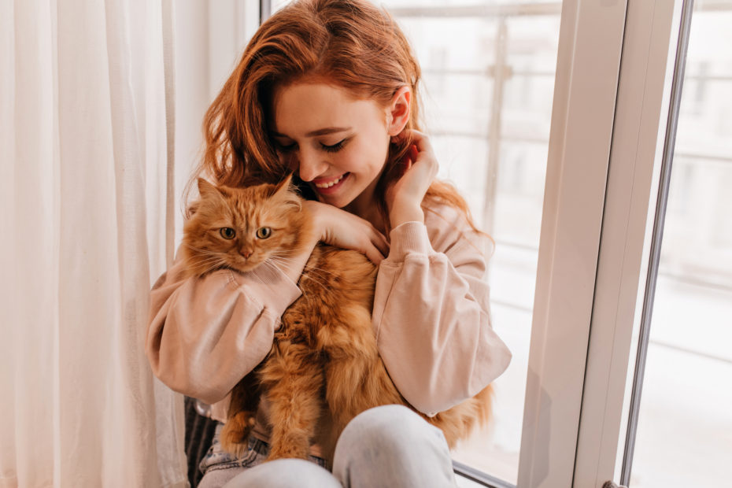
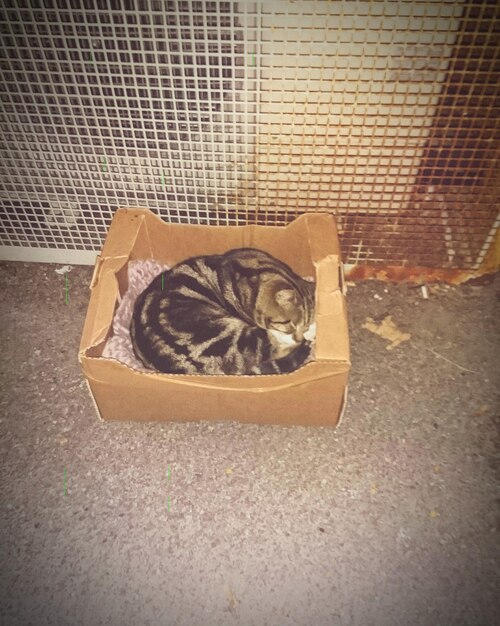
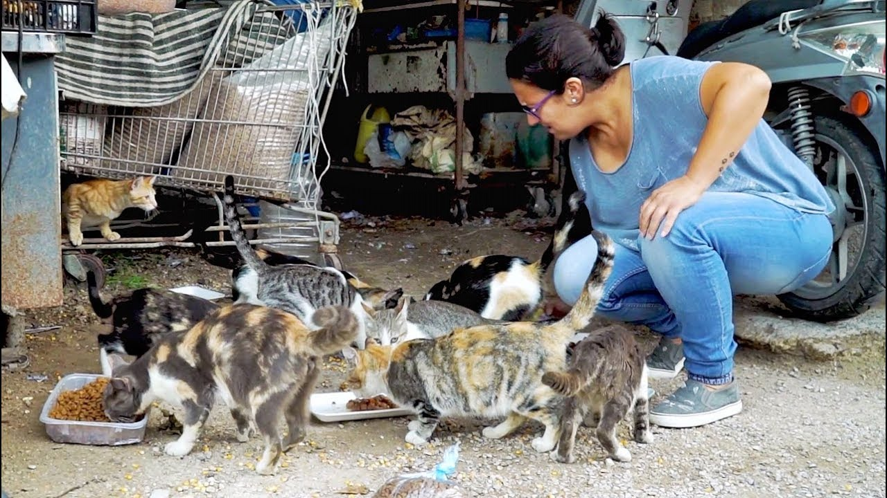
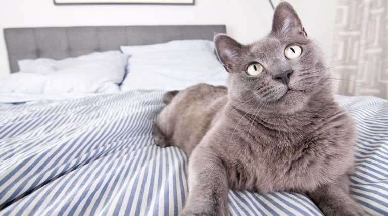

👩👩👧👧 ¿Quiénes somos?
Somos un grupo de mujeres voluntarias de Junín unidas por el amor a los animales. Luchamos cada día por rescatar, curar y encontrar un hogar para cada michi que lo necesite.
💛 Nuestro equipo

Sofi
“Me enamoro de cada rescate como si fuera el primero.”

Juli
“No tenemos un refugio, pero sí un corazón grande y toda la voluntad.”

Male
“Si puedo salvar a uno, ya vale todo el esfuerzo.”
“Cada michi que hoy duerme en un sillón, alguna vez durmió en la vereda. Gracias por ayudarnos a cambiar ese destino.”
🌱 Nuestros comienzos
Todo empezó con una caja en la vereda, un maullido, y una red de personas con ganas de cambiar realidades. Así nació Patitas Salvajes: con compromiso, ternura y muchas ganas de hacer la diferencia.


